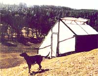
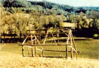
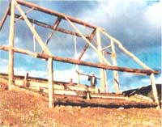
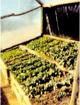
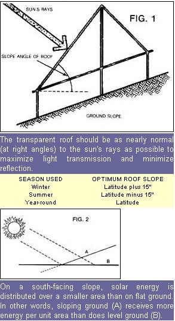
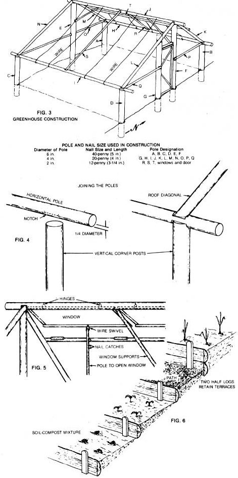

A greenhouse can be a reliable source of fresh winter food. Many of these structures, though, are well beyond the limits of the average budget and that's why we are pleased to present...
In our pan of northern California, maintaining a high level of food self-sufficiency isn't just practical-it's all but necessary! We live in the Mendocino National Forest region, and-though this may come as a surprise to people who've never visited the upper portion of the Golden State-from November through May the road from our ranch to town is often impassable. (Our mountainous, 4,000-degree-day area has quite a variable climate. Although it rarely gets below 16°F, it can also snow in June!) Therefore, we've learned to rely on homegrown food during the winter months. Much of our cold-weather stockpile consists of stored produce from our summer garden; but not long ago, in search of more culinary variety and vitamins, we decided to build the low-cost greenhouse pictured here. Its performance as a producer of fresh winter foods has surprised even us, and there's no reason why anyone with a suitable south-facing piece of soil can't duplicate our do-it-yourself greenhouse.
LOW COST, CAREFUL DESIGN, SIMPLE CONSTRUCTION
If money is no object, I suppose a person could spend just about any amount of cash on a contractor-built greenhouse. However, not only were we determined to grow our own winter vegetables, but we aimed to do so without generating start-up costs that would effectively have us paying triple the store-bought price for our homegrown produce for years to come.
First of all, we arranged with the U.S. Forest Service to purchase a number of knob-cone pines growing on a ridge near our home. The price was right (low!), and pole-building construction is, as anyone who's read the Homestead Handbook in MOTHER'S last issue knows, both effective and easy to learn. We glazed the structure with sheet plastic and simply worked the soil within the greenhouse to avoid having to build expensive and complicated growing beds. Finally, the greenhouse doesn't cost a thing to operate (other than what we spend to fertilize and water the plants), because it uses only the sun's energy for heat. . . right on through the clouds and snow of winter.
In order to get that kind of efficiency from an essentially crude structure, we had to do a good bit of planning before we set to work. The angle of the roof was calculated to allow the maximum transmission of light (see Fig. 1), and we chose a site on a south-facing slope, where the greenhouse would effectively receive more energy per unit of area than it would on level ground (Fig. 2).
PROCEEDING FROM POLE TO POLE
Before actually beginning construction, we carried the poles (which had been stripped and allowed to cure), as well as all of the rest of our materials, to the site by hand and wheelbarrow, to eliminate the risk of erosion due to soil disturbance on the slope. The poles, of course, tapered from one end to the other. We used the thicker portions (they averaged about 6" in diameter) for the load-bearing parts of the structure, and the thinner ends to frame up the doors and windows. Fig. 3 details the sizes of poles and nails used in each application.
We marked out the rough dimensions of the greenhouse on the site, making each side (shown as AB, BD, CD, and AC in Fig. 3) 13' long. The corner poles were each 6"-diameter posts cut to a length of 5' and set 1' 6" into the earth (with the help of a post-hole digger). Then, to provide support for the ridgepole, we cut two more 6 "-diameter poles (E and F) 9' 6" long and set them each 1' 6" into the ground at a point 5'3" down from the corresponding upper corner post. (Unless otherwise specified, all of the distances given are from center to center.) Next, a 4"-diameter timber (G), cut to about 9' in length, was sunk in place at a point 5' 3" up from the east bottom corner, leaving a 2' space (between it and F) for the doorway.
Next we cut two 15' poles of about 4"-diameter (H and I) and-after cutting the notches that would later receive the roof diagonals-secured them to their respective pairs of corner posts, allowing a 1' overhang on each end, as shown in Fig. 4. The 4"-diameter ridgepole (J) was then cut, notched, and fitted in the same manner.
Once the three horizontal components were in place, it was time to measure the diagonals (K, L, M, and N) from the ridgepole to each of the four corner posts. We then cut the poles, making each slightly longer than the actual measurements dictated (better to trim later than to waste a too short pole), raised them into position, marked the exact contact points, then cut the ends, each at an angle, as shown in Fig. 4. Before nailing the diagonal poles, we also marked frame post G, then cut it off and notched it to accept the diagonal post L. With the preparations out of the way, K, L, M, and N were fastened in place. The horizontal poles O on the west and P and Q on the east were measured in a similar manner, then the vertical poles E, F, and G were notched to receive them.
At this point our jumble of "Lincoln Logs" had taken the shape of the greenhouse it was to become. We went on to nail the rafters (R and S) down the centers of the two roof slopes and install another horizontal pole (T) along the north slope to serve as the bottom sill for the windows that we knew would be necessary to vent excess heat. The window frames each consisted of four thin poles nailed together in the form of a rectangle. As illustrated in Fig. 5, the windows-which rest on stops made of short sticks-can be raised or lowered with 4' -long poles that are wired to the frames. Each of these two sticks has holes drilled along its length at regular intervals, and these openings can be fitted over a headless nail in the bottom sill to hold the ports open in a number of positions.
To conclude the framing, we nailed cross braces from each side of the ridgepole to E and F. The door was made in the same fashion as the windows, but included cross bracing at its corners for added rigidity; a short crosspiece was also installed just above the door. Finally, we ripped two long logs in half and nailed these around the base of the structure (to serve as soil retainers and to provide a surface to which the plastic covering's bottom edge could be stapled) and ran a pair of wires over the peak of the roof to provide additional support for the glazing that'd be added later.
TIPTOE THROUGH THE TERRACES
Moving to the inside of the greenhouse, we constructed two pairs of terraces, separated by a central path running across the slope.
As shown in Fig. 6, each bed was built by setting two half logs on edge-one atop the other-and holding them in place with wooden stakes. The "steps" thus created were filled in with a mixture of soil, compost, and goat manure, and small pathways were left to allow close-up tending of the topmost and lowest terraces.
RAISING THE GLAZING
Since our aim from the beginning of this project was to produce a working greenhouse for the smallest cash outlay possible, we elected to cover the structure with plastic. (We replace this every fall.) The north wall doesn't get any direct sunlight, of course, so we chose to wall it with black plastic and used clear material on the rest of the building. We simply rolled the sheets down the hill on the upwind side of the greenhouse and lifted them up and over the roof. The material was then stapled in place, each edge being folded over twice and covered with a strip of 1" roofing felt before the fasteners were inserted. When glazing the doors and windows we were careful to leave a wide "hem" of plastic around the borders to prevent rain from dripping in and to limit the infiltration of cool outside air. (People who live in more severe climates might want to double glaze their greenhouses by attaching an additional layer of plastic to the inside of the structure.)
AND THE BOTTOM LINE?
We began construction of our greenhouse on January 27 and planted the first seeds on February 8. By the end of February, germination was well under way, and not long thereafter we began enjoying romaine lettuce, chard, kale, mustard, Chinese cabbage, turnips, radishes, and green onions. In subsequent years we've planted the greenhouse in the fall so that the indoor plants begin to be ready for harvest at about the time our summer garden is killed by frost.
We've been quite satisfied with the performance of this low-cost greenhouse. (Even on cloudy winter days we've often found it necessary to open the door and windows because the interior temperature approaches 90°F.) In short, for a small cash outlay and a little bit of labor, we now enjoy fresh vegetables throughout the winter months... and, as much as we enjoy our home-canned produce, by the middle of February (which someone once called "the very 3:00 AM of the calendar"), those freshly harvested greens and root crops are more than welcome!
|
 PHOTOS BY THE AUTHORS The Goddards built their lowcost greenhouse on a south-facing slope to maximize its solar gain... |
 The knobcone pines for the structure came form the far ridge in this photo... |
 The growing beds were built into the ground |
|
 On extremely cold days, lettuce has frozen stiff in the greenhouse, then thawed and kept on growing! |
 |
 |